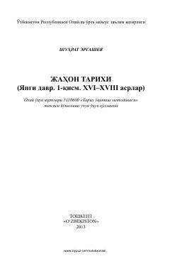

JTJahon tarixining yangi davri, XVI–XVIII asrlar voqealari haqida o'quv qo'llanma.
Ushbu o'quv qo'llanmada jahon tarixining yangi davri, xususan, XVI–XVIII asrlardagi jarayonlar, Buyuk geografik kashfiyotlar va kapitalistik munosabatlarning shakllanishi yoritilgan. Kitob oliy o'quv yurtlari talabalari va tarix fanini o'rganuvchilar uchun mo'ljallangan.